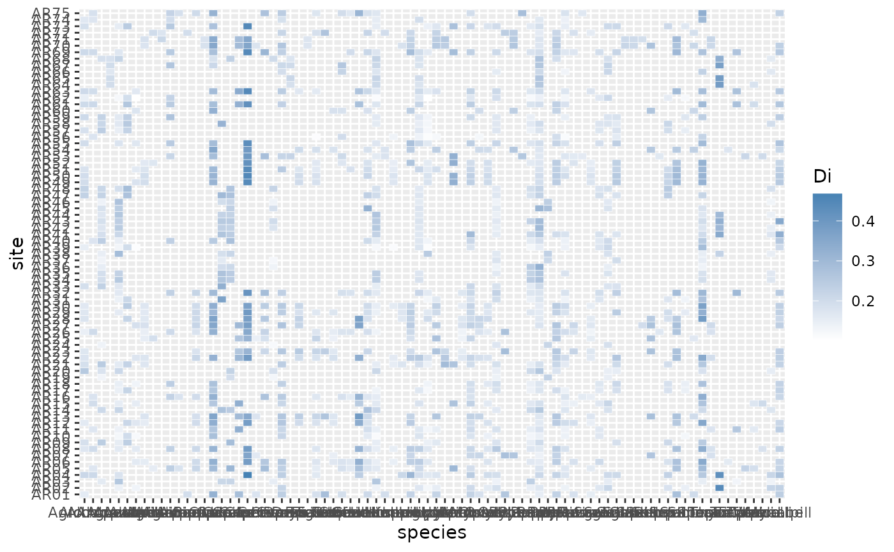
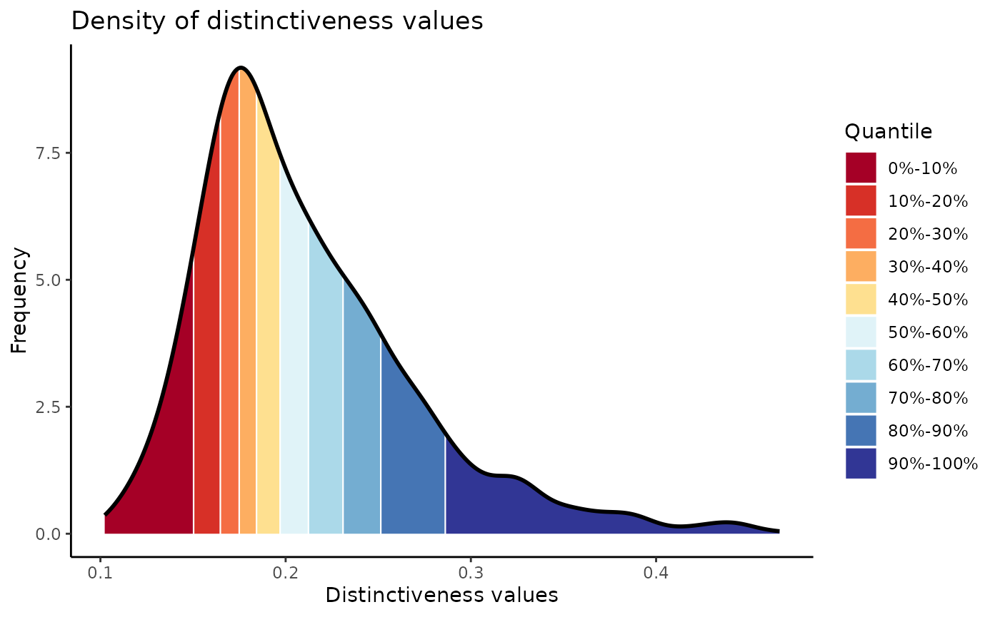
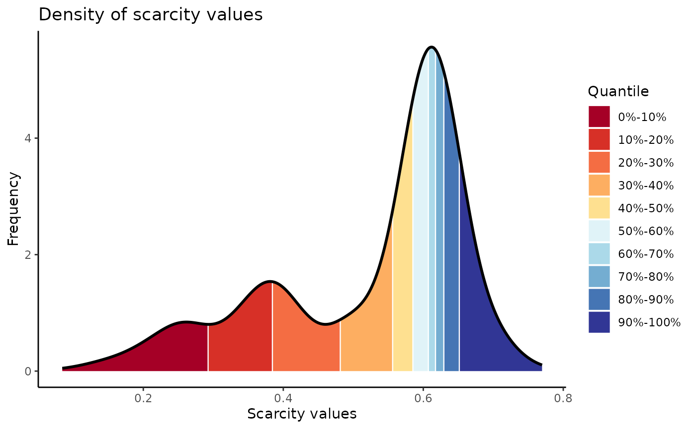
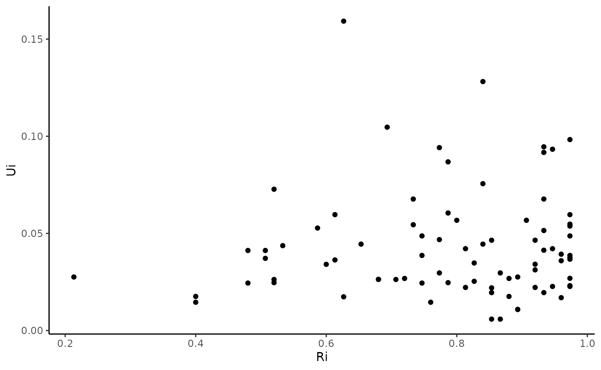

Introduction to funrar through an example
Denelle Pierre & Grenié Matthias
2022-09-01
Source:vignettes/funrar.Rmd
funrar.RmdIntroduction
The idea of Functional Rarity is to measure two components of the rarity of a species (or an individual). In community ecology, researchers are generally interested in the rarity of a species as measured in terms of abundances. A species with a low abundance will be considered ‘rare’. From a functional ecology perspective, this omits important information about the “role” that a given species plays in the ecosystem, its particular niche. A framework is being developed of various indices to characterize how functioning can be rare locally or regionally
In their article, Violle et al. (2017) introduced 4 indices to compute functional rarity indices. funrar package enables ecologists to compute these on any dataset.
Framework
The following figure show the 4 aspects covered by the metrics. Rarity is thus considered at local and regional scales and also from abundance and functional point of views. The name of the package functions are written underneath metrics’ names.

Rarity indices and corresponding functions.
Dataset example
To illustrate the package, we are using a dataset describing the distribution of 82 species of Alpine plants in 75 sites. This dataset was collected by Choler et al.(2005).
Species traits and environmental variables are also available.
## List of 4
## $ spe :'data.frame': 75 obs. of 82 variables:
## ..$ Agro.rupe: int [1:75] 0 0 3 0 0 0 2 0 0 3 ...
## ..$ Alop.alpi: int [1:75] 0 0 0 0 0 0 0 0 0 0 ...
## ..$ Anth.nipp: int [1:75] 0 0 1 0 0 0 0 0 0 0 ...
## ..$ Heli.sede: int [1:75] 0 0 0 2 0 0 0 0 0 0 ...
## ..$ Aven.vers: int [1:75] 0 0 1 0 0 0 2 0 1 2 ...
## ..$ Care.rosa: int [1:75] 1 2 2 2 0 3 2 2 3 3 ...
## ..$ Care.foet: int [1:75] 0 0 0 0 0 0 0 0 0 0 ...
## ..$ Care.parv: int [1:75] 0 1 0 0 0 1 1 1 1 0 ...
## ..$ Care.rupe: int [1:75] 3 0 0 0 0 1 0 3 0 0 ...
## ..$ Care.semp: int [1:75] 0 0 1 0 0 0 0 1 0 2 ...
## ..$ Fest.laev: int [1:75] 0 0 0 0 0 0 0 0 0 0 ...
## ..$ Fest.quad: int [1:75] 2 0 3 1 3 0 2 3 0 0 ...
## ..$ Fest.viol: int [1:75] 0 0 1 0 1 0 0 0 0 0 ...
## ..$ Kobr.myos: int [1:75] 1 3 4 1 1 4 2 2 3 1 ...
## ..$ Luzu.lute: int [1:75] 0 0 1 0 0 0 1 1 1 1 ...
## ..$ Poa.alpi : int [1:75] 1 2 0 2 0 2 0 0 1 1 ...
## ..$ Poa.supi : int [1:75] 0 0 0 0 0 0 0 0 0 0 ...
## ..$ Sesl.caer: int [1:75] 0 0 0 1 1 1 0 2 0 0 ...
## ..$ Alch.pent: int [1:75] 0 0 0 0 0 0 0 0 0 0 ...
## ..$ Alch.glau: int [1:75] 0 0 1 0 0 0 0 0 0 0 ...
## ..$ Alch.vulg: int [1:75] 0 0 0 0 0 0 0 0 0 0 ...
## ..$ Andr.brig: int [1:75] 0 0 0 0 0 0 0 0 0 1 ...
## ..$ Ante.carp: int [1:75] 0 1 1 0 0 1 1 1 1 2 ...
## ..$ Ante.dioi: int [1:75] 0 0 0 0 0 0 0 1 0 0 ...
## ..$ Arni.mont: int [1:75] 0 0 0 0 0 0 0 0 0 0 ...
## ..$ Aste.alpi: int [1:75] 0 0 0 0 0 0 0 0 0 0 ...
## ..$ Bart.alpi: int [1:75] 0 1 0 0 0 1 0 0 0 0 ...
## ..$ Camp.sche: int [1:75] 0 1 1 1 1 1 1 0 1 1 ...
## ..$ Card.alpi: int [1:75] 0 0 0 0 0 0 0 0 0 0 ...
## ..$ Cera.stri: int [1:75] 0 0 0 0 0 1 0 0 1 0 ...
## ..$ Cera.cera: int [1:75] 0 0 0 0 0 0 0 0 0 0 ...
## ..$ Leuc.alpi: int [1:75] 0 0 0 0 0 0 1 0 0 1 ...
## ..$ Cirs.acau: int [1:75] 0 0 0 0 0 0 0 0 0 0 ...
## ..$ Drab.aizo: int [1:75] 0 0 0 1 0 0 1 0 1 1 ...
## ..$ Drya.octo: int [1:75] 0 1 0 0 0 1 0 0 0 0 ...
## ..$ Erig.unif: int [1:75] 0 0 1 1 0 0 1 1 0 0 ...
## ..$ Gent.camp: int [1:75] 0 0 0 0 0 0 1 0 1 1 ...
## ..$ Gent.acau: int [1:75] 0 0 1 0 0 0 0 0 0 0 ...
## ..$ Gent.vern: int [1:75] 0 0 1 1 1 0 0 0 0 1 ...
## ..$ Geum.mont: int [1:75] 0 0 2 0 0 0 0 0 0 0 ...
## ..$ Omal.supi: int [1:75] 0 0 0 0 0 0 0 0 0 0 ...
## ..$ Andr.vita: int [1:75] 0 0 0 0 1 0 1 0 1 0 ...
## ..$ Hier.pili: int [1:75] 0 0 0 0 0 0 1 0 0 0 ...
## ..$ Homo.alpi: int [1:75] 0 0 0 0 0 1 0 0 0 1 ...
## ..$ Leon.pyre: int [1:75] 0 0 0 0 0 0 1 0 0 0 ...
## ..$ Ligu.muto: int [1:75] 0 1 0 1 0 2 0 1 1 0 ...
## ..$ Lloy.sero: int [1:75] 0 1 0 0 0 1 1 0 0 0 ...
## ..$ Minu.sedo: int [1:75] 1 0 0 0 0 0 1 1 2 1 ...
## ..$ Minu.vern: int [1:75] 1 0 1 1 1 0 1 0 1 1 ...
## ..$ Phyt.orbi: int [1:75] 0 0 0 0 0 0 0 0 0 0 ...
## ..$ Plan.alpi: int [1:75] 0 0 0 0 0 0 0 0 0 0 ...
## ..$ Poly.vivi: int [1:75] 1 1 1 0 1 1 1 1 1 0 ...
## ..$ Pote.aure: int [1:75] 0 0 2 0 0 0 1 0 0 0 ...
## ..$ Pote.cran: int [1:75] 0 0 1 0 0 0 0 0 1 0 ...
## ..$ Pote.gran: int [1:75] 0 0 0 0 0 0 0 0 0 0 ...
## ..$ Puls.vern: int [1:75] 0 0 2 0 0 0 1 1 1 1 ...
## ..$ Ranu.kuep: int [1:75] 0 0 0 0 0 0 0 0 0 0 ...
## ..$ Sagi.glab: int [1:75] 0 0 0 0 0 0 0 0 0 0 ...
## ..$ Sali.herb: int [1:75] 0 0 0 0 0 0 1 0 0 0 ...
## ..$ Sali.reti: int [1:75] 0 1 0 0 0 2 0 0 0 0 ...
## ..$ Sali.retu: int [1:75] 0 2 0 0 0 2 0 0 0 0 ...
## ..$ Sali.serp: int [1:75] 0 1 0 0 0 0 0 0 2 0 ...
## ..$ Saxi.pani: int [1:75] 1 0 0 2 1 1 0 1 1 1 ...
## ..$ Sedu.alpe: int [1:75] 0 0 0 0 0 0 0 0 0 1 ...
## ..$ Semp.mont: int [1:75] 0 1 1 1 0 1 1 0 1 1 ...
## ..$ Sene.inca: int [1:75] 0 0 0 0 0 0 0 0 0 0 ...
## ..$ Sibb.proc: int [1:75] 0 0 0 0 0 0 1 0 0 1 ...
## ..$ Sile.acau: int [1:75] 1 1 1 0 0 2 1 0 1 0 ...
## ..$ Thym.poly: int [1:75] 0 0 0 2 0 0 0 0 0 0 ...
## ..$ Vero.alpi: int [1:75] 0 0 0 0 0 0 0 0 0 0 ...
## ..$ Vero.alli: int [1:75] 0 0 0 0 0 0 0 0 0 0 ...
## ..$ Vero.bell: int [1:75] 0 0 0 1 0 1 1 0 1 1 ...
## ..$ Myos.alpe: int [1:75] 0 0 1 1 0 0 1 0 0 1 ...
## ..$ Tara.alpi: int [1:75] 0 0 0 0 0 0 0 0 0 0 ...
## ..$ Scab.luci: int [1:75] 0 0 1 0 0 0 0 0 0 0 ...
## ..$ Anth.alpe: int [1:75] 0 1 0 0 0 0 0 0 0 0 ...
## ..$ Oxyt.camp: int [1:75] 1 0 1 0 0 0 0 0 0 0 ...
## ..$ Oxyt.lapp: int [1:75] 1 1 0 1 1 1 0 0 0 0 ...
## ..$ Lotu.alpi: int [1:75] 0 0 0 0 0 0 0 0 0 0 ...
## ..$ Trif.alpi: int [1:75] 0 0 0 0 0 0 0 0 0 0 ...
## ..$ Trif.badi: int [1:75] 0 0 0 0 0 0 0 0 0 0 ...
## ..$ Trif.thal: int [1:75] 0 0 0 0 0 0 0 0 0 0 ...
## $ env :'data.frame': 75 obs. of 6 variables:
## ..$ Aspect: int [1:75] 7 1 5 9 9 1 5 6 9 1 ...
## ..$ Slope : int [1:75] 2 35 0 30 5 30 10 12 2 5 ...
## ..$ Form : Factor w/ 5 levels "1","2","3","4",..: 1 3 3 3 1 3 3 2 1 3 ...
## ..$ PhysD : int [1:75] 50 40 20 80 80 40 70 15 65 60 ...
## ..$ ZoogD : Factor w/ 3 levels "no","some","high": 1 1 1 1 1 1 1 1 1 1 ...
## ..$ Snow : int [1:75] 140 140 140 140 140 140 160 140 140 150 ...
## $ traits :'data.frame': 82 obs. of 8 variables:
## ..$ Height: num [1:82] 6 5 15 0 12 30 12 25 9 20 ...
## ..$ Spread: int [1:82] 10 20 5 30 30 20 40 10 5 20 ...
## ..$ Angle : int [1:82] 80 20 50 80 60 80 45 80 70 50 ...
## ..$ Area : num [1:82] 60 191 280 600 420 ...
## ..$ Thick : num [1:82] 0.12 0.2 0.08 0.2 0.14 0.4 0.14 0.2 0.2 0.2 ...
## ..$ SLA : num [1:82] 8.1 15.1 18 10.6 12.5 6.5 19 13.7 8.8 11.5 ...
## ..$ N_mass: num [1:82] 219 204 220 233 156 ...
## ..$ Seed : num [1:82] 0.08 0.21 0.54 1.72 1.17 1.68 0.23 0.61 0.64 0.83 ...
## $ spe.names: Named chr [1:82] "Agrostis rupestris All." "Alopecurus alpinus Vill." "Anthoxanthum odoratum L. subsp. nipponicum (Honda) Tzvelev" "Helictotrichon sedenense (DC.) Holub" ...
## ..- attr(*, "names")= chr [1:82] "Agro.rupe" "Alop.alpi" "Anth.nipp" "Heli.sede" ...Functional rarity indices
Inputs of functions
For each metric, the package includes two functions, depending on the input type. Ecologist usually have to deal with site-species matrix, containing sites names as rows, species in columns and either abundances or presence/absence data (see example datasets in vegan or ade4 packages for example). Thus, this matrix is needed as an input for each simple function.
# Site-species matrix stored in aravo$spe
mat = as.matrix(aravo$spe)
mat[1:5, 1:5]## Agro.rupe Alop.alpi Anth.nipp Heli.sede Aven.vers
## AR07 0 0 0 0 0
## AR71 0 0 0 0 0
## AR26 3 0 1 0 1
## AR54 0 0 0 2 0
## AR60 0 0 0 0 0metricname() functions can be used to compute indices directly on site-species matrices.
Users can also use a stacked (or tidy) data.frame, containing columns for sites, species and abundances. The package contains for each metric another function called metricname_stack() function that can take these stacked data.frames as inputs.
funrar package includes two functions to go from one format to the other: matrix_to_stack() and stack_to_matrix()
library(funrar)
dat = matrix_to_stack(mat, "value", "site", "species")
head(dat)## species site value
## 1 Agro.rupe AR07 0
## 2 Agro.rupe AR71 0
## 3 Agro.rupe AR26 3
## 4 Agro.rupe AR54 0
## 5 Agro.rupe AR60 0
## 6 Agro.rupe AR70 0
# The reverse function is provided and gives the same original matrix
identical(
as.numeric(stack_to_matrix(dat, "site", "species", "value")), as.numeric(mat)
)## [1] FALSE
# Removal of empty rows
dat = dat[which(dat$value > 0), ]The package is also able to deal with large matrices with many zeroes by using sparse matrices. For more details, see sparse_matrices vignette.
Indices
Distance matrix computation
The indices rely on the computation of a distance matrix. It represents the functional distance between two species given a particular set of traits. From a species traits matrix you can easily compute a distance matrix using function compute_dist_matrix().
In order to compute distance matrix, species names must be specified as rownames in the traits table. Further, species names must match between the traits table and distance matrix. Species names must be characters and not factors.
The function relies on the daisy() function from package cluster and the default metric is Gower’s distance to take into account ordinal, categorical and binary traits:
## Height SLA N_mass
## Agro.rupe 6 8.1 218.70
## Alop.alpi 5 15.1 203.85
## Anth.nipp 15 18.0 219.60
## Heli.sede 0 10.6 233.20
## Aven.vers 12 12.5 156.25
## Care.rosa 30 6.5 208.65
dist_mat = compute_dist_matrix(tra)## Only numeric traits provided, consider using euclidean distance.
dist_mat[1:5, 1:5]## Agro.rupe Alop.alpi Anth.nipp Heli.sede Aven.vers
## Agro.rupe 0.0000000 0.1004668 0.2083010 0.1068477 0.1705883
## Alop.alpi 0.1004668 0.0000000 0.1567591 0.1308034 0.1488041
## Anth.nipp 0.2083010 0.1567591 0.0000000 0.2592416 0.1500077
## Heli.sede 0.1068477 0.1308034 0.2592416 0.0000000 0.2231472
## Aven.vers 0.1705883 0.1488041 0.1500077 0.2231472 0.0000000Using the metric argument in compute_dist_matrix() you can specify other distance metrics (euclidean for Euclidean distances and manhattan for Manhattan distances) for functional distances. You can also compute your own distance matrix with other methods as long as it is a matrix and both row names and column names are species names.
Functional Distinctiveness computation
Formula
The distinctiveness measures how a species is locally functionally rare, in comparison with the other species of community. Each species (or individual) in each community will get a distinctiveness value. Distinctiveness values range from 0 to 1. A value of 0 indicates that the focal species is not locally functionally distant from the other and conversely.
From given functional distances, it is computed as such: \[ D_i = \frac{\sum_{\substack{j = 1, \\ i \neq j }}^{N} d_{ij}}{N-1}, \] with \(D_i\) distinctiveness of species \(i\), \(d_{ij}\) the functional distance between species \(i\) and species \(j\), \(N\) the number of species present in considered community.
When weighted by abundances the formula becomes: \[ D_i = \frac{\sum_{\substack{j = 1, \\ i \neq j }}^{N} d_{ij}\times A_j}{\sum_{\substack{j = 1, \\ i \neq j }}^{N} A_j}, \] with the same terms as above, and \(A_j\) the relative abundance of species \(j\) in percent, in the community.
Computation with site-species matrix
Using funrar functional distinctiveness can be computed using function distinctiveness():
# Compute distinctiveness for each species on each site
di = distinctiveness(pres_matrix = mat, # The site x species matrix
dist_matrix = dist_mat) # Functional Distance matrix
di[1:5, 1:5]## Agro.rupe Alop.alpi Anth.nipp Heli.sede Aven.vers
## AR07 NA NA NA NA NA
## AR71 NA NA NA NA NA
## AR26 0.1460428 NA 0.2039929 NA 0.1788624
## AR54 NA NA NA 0.1786867 NA
## AR60 NA NA NA NA NAThe syntax for distinctiveness() is first the matrix and then the functional distance matrix. The function returns a site-species matrix filled with Di values, i.e. the species functional distinctiveness in each species per site combination.
Computation with stacked data.frame
Using funrar distinctiveness values can be computed using function distinctiveness_stack():
# Species should be character
dat$species = as.character(dat$species)
# Compute distinctiveness for each species on each site
di_df = distinctiveness_stack(
com_df = dat, # The site x species table
sp_col = "species", # Name of the species column
com = "site", # Name of the community column
abund = NULL, # Relative abundances column (facultative)
dist_matrix = dist_mat # Functional Distance matrix
)## No abundance column provided, computing Di without it
head(di_df)## species site value Di
## 1 Agro.rupe AR01 1 0.1661127
## 2 Heli.sede AR01 2 0.1828906
## 3 Care.parv AR01 1 0.3057277
## 4 Care.rupe AR01 3 0.1805076
## 5 Fest.laev AR01 1 0.3093468
## 6 Fest.viol AR01 1 0.1907347The syntax for distinctiveness_stack() is first the table, then the name of the species column, then the name of the community column, then the name of the relative abundance column and finally the distance matrix. The function add a Di column giving the species distinctiveness in each species per site combination.
For abundance weighted distinctiveness you need to have a column containing relative abundances in your data frame as such:
di_df = distinctiveness_stack(dat, "species", "site", "value", dist_mat)
head(di_df)## species site value Di
## 1 Agro.rupe AR01 1 0.1569403
## 2 Heli.sede AR01 2 0.1924531
## 3 Care.parv AR01 1 0.2837640
## 4 Care.rupe AR01 3 0.1761766
## 5 Fest.laev AR01 1 0.2828495
## 6 Fest.viol AR01 1 0.1918732Scarcity
Formula
The scarcity measures how locally abundant a species is, in comparison to the other species of community. Each species (or individual) in each community will get a scarcity value. Scarcity values range from 0 to 1. A 0 value indicates that the focal species is locally abundant and conversely.
\[ S_i = \exp(-NA_i\log2), \]
with \(S_i\) the scarcity of species \(i\), \(N\) the number of species in the local community, \(A_i\) the relative abundance (in percent) of species \(i\) in the community.
Computation
With funrar it can be computed with scarcity() function with a syntax analog to distinctiveness()
si = scarcity(pres_matrix = mat)## Warning in scarcity(pres_matrix = mat): Provided object may not contain relative abundances nor presence-absence
## Have a look at the make_relative() function if it is the case
si[1:5, 1:5]## Agro.rupe Alop.alpi Anth.nipp Heli.sede Aven.vers
## AR07 NA NA NA NA NA
## AR71 NA NA NA NA NA
## AR26 3.308722e-24 NA 1.490116e-08 NA 1.490116e-08
## AR54 NA NA NA 1.455192e-11 NA
## AR60 NA NA NA NA NAScarcity requires relative abundances to be computed. We thus have to convert our dataset with abundances to relative abundances. To do that we first compute total abundances per site.
# Compute relative abundances
site_abundances = aggregate(value ~ site, data = dat, FUN = sum)
colnames(site_abundances)[2] = "total_abundance"
dat = merge(dat, site_abundances, by = "site")
dat$rel_abund = dat[["value"]] / dat[["total_abundance"]]
head(dat)## site species value total_abundance rel_abund
## 1 AR01 Oxyt.camp 1 32 0.03125
## 2 AR01 Gent.vern 1 32 0.03125
## 3 AR01 Fest.laev 1 32 0.03125
## 4 AR01 Kobr.myos 5 32 0.15625
## 5 AR01 Vero.bell 1 32 0.03125
## 6 AR01 Care.rupe 3 32 0.09375Then we can compute Scarcity using relative abundances:
si_df = scarcity_stack(dat, "species", "site", "rel_abund")
head(si_df)## site species value total_abundance rel_abund Si
## 1 AR01 Oxyt.camp 1 32 0.03125 0.60762368
## 2 AR01 Gent.vern 1 32 0.03125 0.60762368
## 3 AR01 Fest.laev 1 32 0.03125 0.60762368
## 4 AR01 Kobr.myos 5 32 0.15625 0.08282729
## 5 AR01 Vero.bell 1 32 0.03125 0.60762368
## 6 AR01 Care.rupe 3 32 0.09375 0.22433863Uniqueness
Formula
Uniqueness measures how functionally rare a species is at the regional scale. Each species (or individual) in the species pool will get a uniqueness value. Uniqueness values range from 0 to 1. A 0 value indicates that the focal species shares the exact same traits as other species in the pool and conversely.
\[ U_i = \text{min}(d_{ij}), \forall j \in [1, N_R], j \neq i, \]
with \(U_i\) the uniqueness of species \(i\), \(d_{ij}\) the functional distance between species \(i\) and species \(j\), \(N_R\) the number of species in the regional pool.
Computation
uniqueness() follows a similar syntax, but beware that given community table and distance matrix should represent the regional species pool. And the syntax is also similar:
ui = uniqueness(mat, dist_mat)
head(ui)## species Ui
## 1 Agro.rupe 0.03635369
## 2 Alop.alpi 0.03715692
## 3 Anth.nipp 0.09414051
## 4 Heli.sede 0.02270997
## 5 Aven.vers 0.05675178
## 6 Care.rosa 0.15922932
ui_df = uniqueness_stack(dat, "species", dist_mat)
head(ui_df)## species Ui
## 1 Oxyt.camp 0.06768509
## 2 Gent.vern 0.01736809
## 3 Fest.laev 0.09332004
## 4 Kobr.myos 0.10466645
## 5 Vero.bell 0.04370376
## 6 Care.rupe 0.01953443
dim(ui_df[!duplicated(ui_df$species), ])## [1] 82 2Geographical Restrictedness
Formula
Restrictedness measures how regionally rare a species is. The following function represents a species’ occupancy for a set of communities. Each species (or individual) in the species pool will have a restrictedness value. Restrictedness values range from 0 to 1. A 0 value indicates that the focal species is present in all the sites.
\[ R_i = 1 - N_i/N_tot \]
with \(R_i\) the restrictedness of species \(i\), \(N_i\) the number of sites where species \(i\) is found and \(N_tot\) the total number of sites.
Computation
ri = restrictedness(mat)
head(ri)## species Ri
## 1 Agro.rupe 0.6133333
## 2 Alop.alpi 0.5066667
## 3 Anth.nipp 0.7733333
## 4 Heli.sede 0.9466667
## 5 Aven.vers 0.8000000
## 6 Care.rosa 0.6266667
# Species should be character
dat$site = as.character(dat$site)
ri_df = restrictedness_stack(dat, "species", "site")
head(ri_df)## species Ri
## 1 Agro.rupe 0.6133333
## 2 Alch.glau 0.8133333
## 3 Alch.pent 0.6533333
## 4 Alch.vulg 0.9333333
## 5 Alop.alpi 0.5066667
## 6 Andr.brig 0.7733333funrar
This function computes all of the four metrics introduced above.
all_ind = funrar(mat, dist_mat, rel_abund = TRUE)## Warning in scarcity(pres_matrix): Provided object may not contain relative abundances nor presence-absence
## Have a look at the make_relative() function if it is the case
str(all_ind)## List of 4
## $ Ui:'data.frame': 82 obs. of 2 variables:
## ..$ species: chr [1:82] "Agro.rupe" "Alop.alpi" "Anth.nipp" "Heli.sede" ...
## ..$ Ui : num [1:82] 0.0364 0.0372 0.0941 0.0227 0.0568 ...
## $ Di: num [1:75, 1:82] NA NA 0.146 NA NA ...
## ..- attr(*, "dimnames")=List of 2
## .. ..$ : chr [1:75] "AR07" "AR71" "AR26" "AR54" ...
## .. ..$ : chr [1:82] "Agro.rupe" "Alop.alpi" "Anth.nipp" "Heli.sede" ...
## $ Ri:'data.frame': 82 obs. of 2 variables:
## ..$ species: chr [1:82] "Agro.rupe" "Alop.alpi" "Anth.nipp" "Heli.sede" ...
## ..$ Ri : num [1:82] 0.613 0.507 0.773 0.947 0.8 ...
## $ Si: num [1:75, 1:82] NA NA 3.31e-24 NA NA ...
## ..- attr(*, "dimnames")=List of 2
## .. ..$ : chr [1:75] "AR07" "AR71" "AR26" "AR54" ...
## .. ..$ : chr [1:82] "Agro.rupe" "Alop.alpi" "Anth.nipp" "Heli.sede" ...
identical(all_ind$Ui, ui)## [1] TRUE
identical(all_ind$Di, di)## [1] TRUE
identical(all_ind$Ri, ri)## [1] TRUE
identical(all_ind$Si, si)## [1] TRUEPlots
In this section, some ideas to plot your results are presented. For example the density of the various indices or a matrix visualization of the values of distinctiveness per species.
library(ggplot2)
# Heatmap with distinctiveness values
ggplot(di_df, aes(species, site)) +
geom_tile(aes(fill = Di), colour = "white") +
scale_fill_gradient(low = "white", high = "steelblue")
# Density of distinctiveness values
quant = quantile(di_df$Di, probs = seq(0, 1, 0.10))
labels_quant = paste(names(quant)[-length(quant)], names(quant)[-1], sep = "-")
di_density = data.frame(density(di_df$Di)[c("x", "y")])
di_density = subset(di_density, x >= quant[[1]] & x <= quant[[length(quant)]])
di_density$quant = cut(di_density$x, breaks = quant)
quant = quantile(di_df$Di, probs = seq(0, 1, 0.10))
labels_quant = paste(names(quant)[-length(quant)], names(quant)[-1], sep = "-")
di_dens = ggplot(data = di_density, aes(x = x, y = y)) +
geom_area(aes(fill = quant)) +
scale_fill_brewer(palette = "RdYlBu", labels = labels_quant,
name = "Quantile") +
geom_line(size = 1) +
xlab("Distinctiveness values") +
ylab("Frequency") +
ggtitle("Density of distinctiveness values") +
theme_classic()
di_dens
# Density of scarcity values
quant = quantile(si_df$Si, probs = seq(0, 1, 0.10))
labels_quant = paste(names(quant)[-length(quant)], names(quant)[-1], sep = "-")
si_density = data.frame(density(si_df$Si)[c("x", "y")])
si_density = subset(si_density, x >= quant[[1]] & x <= quant[[length(quant)]])
si_density$quant = cut(si_density$x, breaks = quant)
quant = quantile(si_df$Si, probs = seq(0, 1, 0.10))
labels_quant = paste(names(quant)[-length(quant)], names(quant)[-1], sep = "-")
si_dens = ggplot(data = si_density, aes(x = x, y = y)) +
geom_area(aes(fill = quant)) +
scale_fill_brewer(palette = "RdYlBu", labels = labels_quant,
name = "Quantile") +
geom_line(size = 1) +
xlab("Scarcity values") +
ylab("Frequency") +
ggtitle("Density of scarcity values") +
theme_classic()
si_dens
# Regional rarity: restrictedness versus uniqueness
colnames(ri_df)[colnames(ri_df) == "sp"] = "species"
ri_ui <- merge(ri_df, ui_df, by = "species")
ggplot(ri_ui, aes(Ri, Ui)) +
geom_point() +
theme_classic() 
References
Choler, P. (2005) Consistent shifts in Alpine plant traits along a mesotopographical gradient. Arctic, Antarctic, and Alpine Research, 37,444-453.
Violle C., Thuiller W., Mouquet N., Munoz F., Kraft NJB, Cadotte MW, Livingstone SW, Mouillot D., Functional Rarity: The Ecology of Outliers, Trends in Ecology & Evolution, Volume 32, Issue 5, May 2017, Pages 356-367, ISSN 0169-5347, https://doi.org/10.1016/j.tree.2017.02.002.